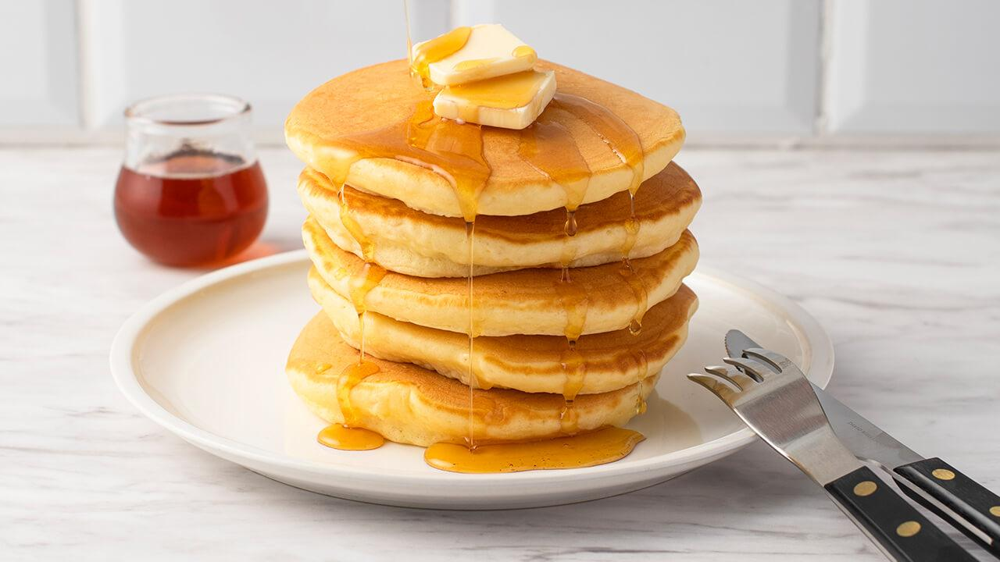

Pancakes

Description
Pancakes are a classic breakfast dish made from a
simple batter of flour, eggs, milk, and butter. They
are cooked on a hot skillet until golden brown and
fluffy, then served with syrup or your favorite toppings.
Ingredients
- 1 1/2 cups all-purpose flour
- 3 1/2 teaspoons baking powder
- 1 tablespoon sugar
- 1/4 teaspoon salt
- 1 1/4 cups milk
- 1 large egg
- 3 tablespoons melted butter
- 1 teaspoon vanilla extract (optional)
- Maple syrup for serving
Steps
- In a large bowl, combine the flour, baking powder, sugar, and salt.
- In a separate bowl, whisk together the milk, egg, melted butter, and vanilla extract if using.
- Pour the wet ingredients into the dry ingredients.
- Stir gently until just combined. A few lumps in the batter are okay.
- Heat a nonstick skillet or griddle over medium heat.
- Lightly grease the skillet with a small amount of butter if needed.
- Pour about 1/4 cup of batter onto the skillet for each pancake.
- Cook until bubbles form on the surface and the edges begin to set, about 2 to 3 minutes.
- Flip each pancake and cook for another 1 to 2 minutes, until golden brown and cooked through.
- Transfer the pancakes to a plate and serve warm with maple syrup.